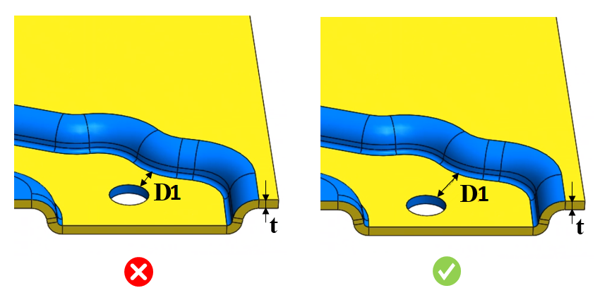

穴と曲げエッジとの距離を板厚で割った比率は、指定された値以上である必要があります。
部品上の単純穴と曲げ部との距離が最小値を下回る場合、板材が変形する可能性があります。
穴と曲げ部との距離は、材料厚さの少なくとも2.5倍である必要があります。曲げ部に非常に近い位置で穴あけを行うと、材料の変形を引き起こす可能性があります。
一般的なガイドラインでは、板厚の2.5倍の距離を確保することで変形を防ぐことが推奨されています。
ユーザーは、材料データベースから製造材料を設定し、対応する穴距離、曲げエッジ、および板厚比率を構成できます。DFXは部品上の単純穴を識別し、穴から曲げエッジまでの最小距離（最小点間距離）と板厚（D/t）の比率を、設定された値と比較して検証します。必要に応じて、デフォルトで設定されている値を編集することもできます。
ルールUIでは、材料の一覧が Materials Database から読み込まれます。ユーザーは材料およびそれに関連する値を設定できます。材料グループ内では、材料グレードはアルファベット順に並びます。材料グループが選択されている場合、DFMProは材料グループ全体で一貫した比率を維持したまま解析を実行します。

ここでは、
D1 = 穴と曲げエッジ間の最小距離
t = 板金の板厚
穴と曲げ部との間の点間距離に基づいて距離を算出します。
単純穴のみがサポートされています。